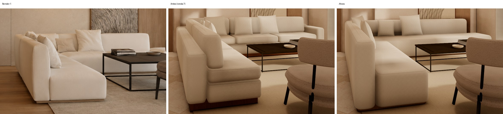
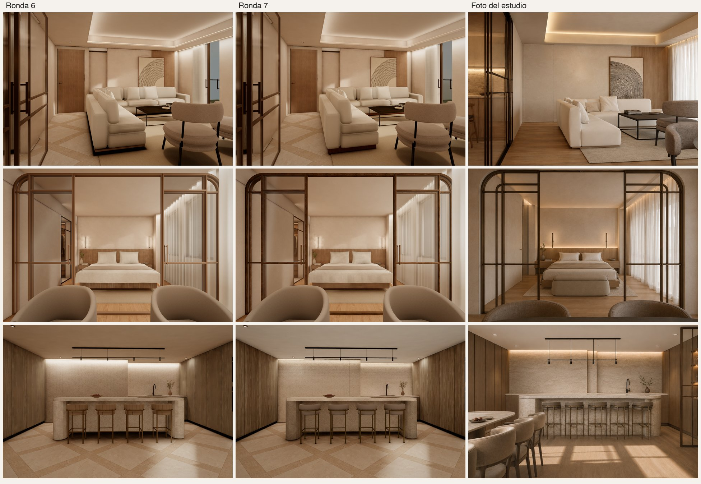
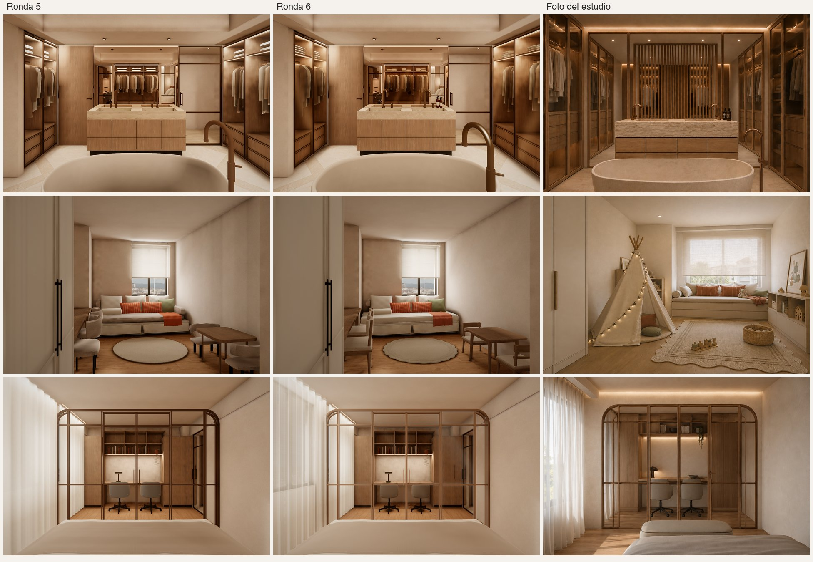
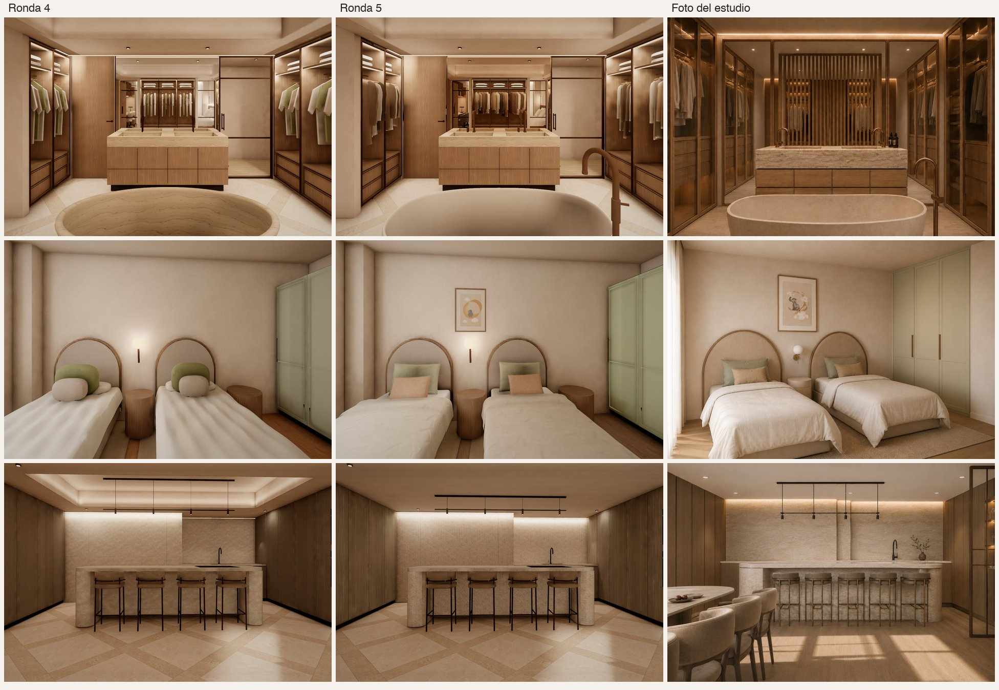

Rondas contra los renders del estudio
Capturas del visor con la pose de cada render, junto a la ronda anterior y la foto del estudio. Octubre de 2026.
Sofá del salón · render 1

Ronda 7 · salón, dormitorio y cocina

Ronda 6 · baño, juegos y estudio

Ronda 5 · baño, niñas y cocina
